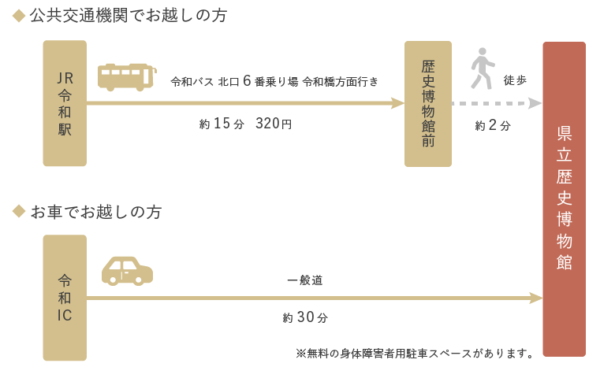

アクセス
Language | 日本語
Language
日本語
English
中文
한국어
利用案内
アクセス
入館料・チケット購入
フロアガイド
貸し出し施設
学校・団体受付
カフェ・ミュージアム
ショップ
よくあるご質問
展示
企画展
常設展
イベント
展示関連イベント
講座・講演会
収蔵資料
収蔵資料紹介
資料画像の利用について
調査・研究
研究成果
刊行物
博物館について
沿革
館長挨拶
アクセス
ホーム
利用案内
アクセス
周辺マップ
アクセス

利用案内
アクセス
入館料・チケット購入
フロアガイド
貸し出し施設
学校・団体受付
カフェ・ミュージアムショップ
よくあるご質問